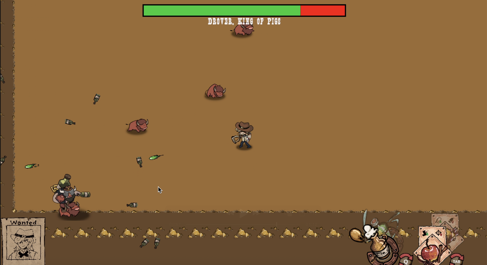
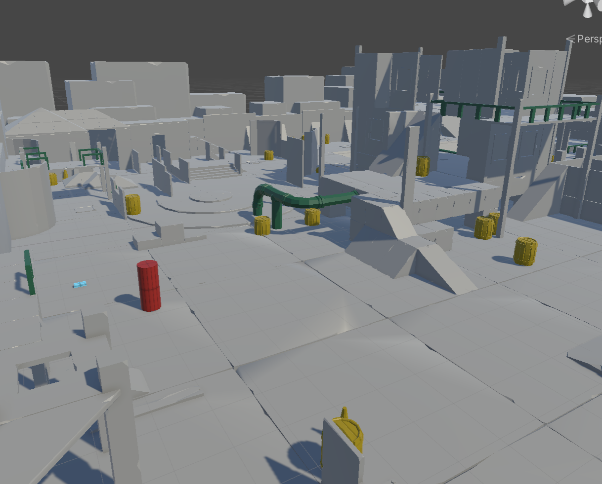

Quantum Decisions Paper
Quantum Decisions is a
research review discussing the intersection between cognitive science and emerging quantum
technology, published in the IPC Spring 2025 Journal.

Monsterpiece! is a combat puzzle game that I worked on as Quality Assurance/Music Lead and Programmer for Potion of Soup Studios (Cornell's 3152 class in 2026).
Scute-Shoot is a casual adventure game that I worked on as a part of the 2025 Cornell DGA Summer Project. I contributed player programming, UI programming, and UI art.
Duke vs. the Gang is a game that I worked on as a programmer for the 2025-2026 DGA Studios Project. I contributed UI programming, narrative design, progression backend, and dialogue scripting.

DJ Da Capo is a game that I made with Joanne Chen for the 2025 Big Red Hacks Hackathon. I contributed UI programming, audio curation, audio integration, and gameplay programming. If you'd like to see a more in-depth presentation of the game, check out these slides!
For Cornell's CUXR Project Team, I am leading a subteam that is developing a VR Unity game. We are very close to having a workable 3D demo, which we plan to port to VR as soon as possible.

Quantum Decisions is a
research review discussing the intersection between cognitive science and emerging quantum
technology, published in the IPC Spring 2025 Journal.